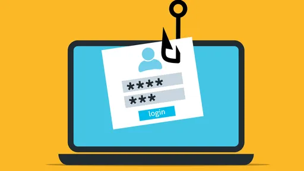
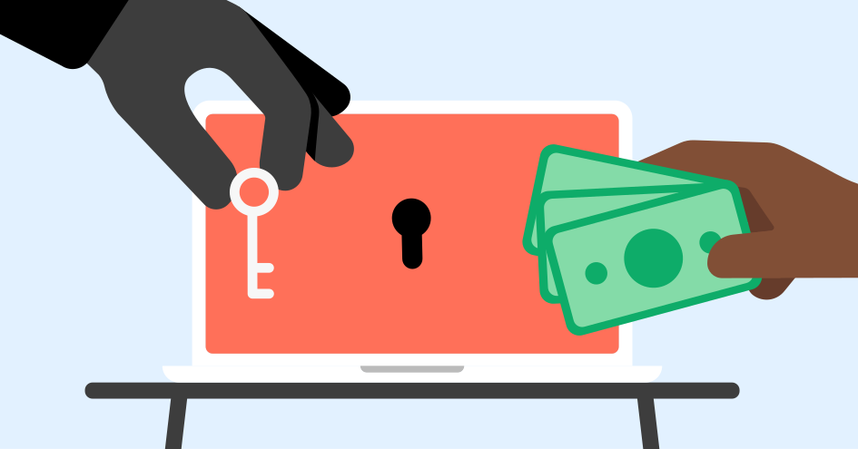
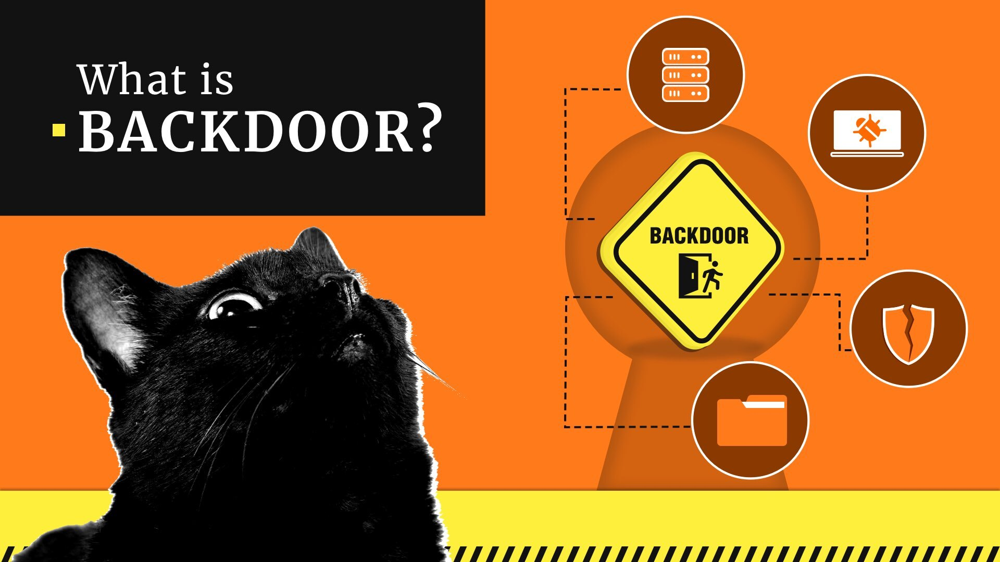
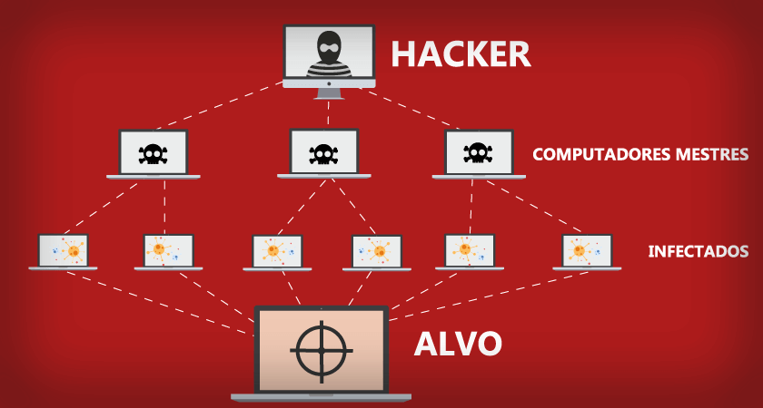
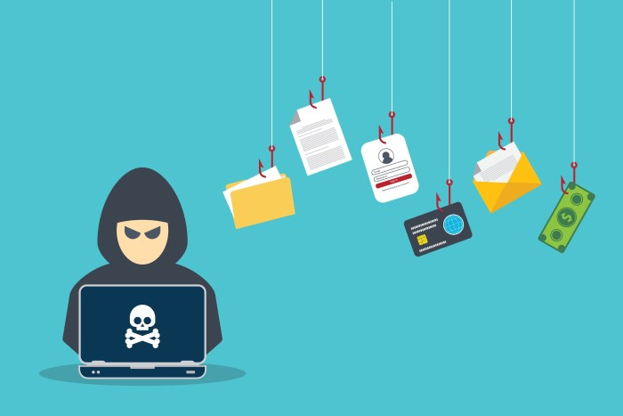

Abaixo listamos os tipos mais comuns de ataques ciberneticos
6 Ataques mais comuns
Phishing
Os ataques de Phishing são amplamente reconhecidos como uma das formas mais comuns e eficazes de ciberataques. Normalmente conduzidos por meio de e-mails, os hackers buscam "pescar" informações confidenciais de suas vítimas, como o nome sugere.
Uma prática frequente nessa modalidade de ciberataque é guiar o usuário até uma página falsa, idêntica à página verdadeira de bancos e outras instituições, e lá colher as informações de interesse do cibercriminoso.
Malware
Malware, também conhecido como software malicioso, refere-se a qualquer código dissimulado que seja instalado em um dispositivo, como computador, smartphone, entre outros, para executar ações sem o conhecimento do usuário.
Esses programas maliciosos são frequentemente instalados inadvertidamente, camuflados em outros arquivos ou incorporados a aplicativos de terceiros.

Uma vez ativados, os malwares agem de forma automática, executando uma variedade de funções. Eles podem ser utilizados para espionar o uso dos sistemas, interceptar comunicações, registrar teclas digitadas, capturar e enviar dados ou até mesmo diminuir a capacidade de processamento da máquina.
Ransomware
Nos últimos anos, o Ransomware tem se tornado a categoria de malware mais amplamente difundida. Esse código altamente especializado tem a função de criptografar dados aos quais ele tem acesso, seja no dispositivo em que foi instalado, como o disco local da máquina, ou até mesmo em bancos de dados na nuvem.
O objetivo desses ataques é impedir o acesso da empresa às suas próprias informações, bem como aos dados de seus clientes, o que pode causar sérios prejuízos à produtividade na era digital e até mesmo resultar em vazamentos graves.
Quando bem-sucedido, o criminoso exige uma compensação financeira (geralmente, criptomoeda) para restaurar o acesso aos dados, daí o termo "Ransom", que significa resgate em inglês.
Backdoor
O Blackdoor, um tipo de trojan (cavalo de troia), oferece aos hackers a capacidade de acessar e controlar o sistema infectado, concedendo-lhes a possibilidade de modificar, excluir ou instalar arquivos, enviar e-mails mal-intencionados utilizando credenciais corporativas, realizar transações bancárias e outras atividades maliciosas que podem causar sérios danos ao negócio.
Ataque DoS e DDoS
O ataque de negação de serviço, também conhecido como DDoS, é uma ameaça amplamente utilizada que não requer a manipulação direta da engenharia social, sendo considerada uma prática de força bruta.
Nesse tipo de ataque, o criminoso utiliza uma grande quantidade de dispositivos infectados por malwares para sobrecarregar o servidor da empresa com um volume de acessos muito superior ao que ele é capaz de suportar. Quando isso ocorre, o sistema fica indisponível, o que abre uma brecha para invasões ou comprometimento dos produtos digitais oferecidos pelo negócio.
Engenharia social
Os ataques de engenharia social são uma prática voltada para explorar as vulnerabilidades dos usuários. Nesse tipo de ataque, o criminoso manipula a vítima para que ela clique em links maliciosos, conecte um dispositivo infectado ao seu computador ou revele informações confidenciais.
É comum que esse tipo de cibercrime utilize formulários falsos do Google e e-mails que solicitam senhas e outros dados pessoais ou corporativos que não devem ser compartilhados.
Como se previnir de ataques cibernéticos?
1 - Mantenha o software atualizado:
Certifique-se de que todos os programas e sistemas operacionais em seus dispositivos estejam atualizados com as últimas correções de segurança. Isso ajuda a evitar a exploração de vulnerabilidades conhecidas pelos hackers.
2 - Use senhas fortes e exclusivas:
Crie senhas robustas, com uma combinação de letras maiúsculas e minúsculas, números e caracteres especiais. Evite senhas óbvias e não use a mesma senha para várias contas.
3 - Tenha cuidado com e-mails e links suspeitos:
Evite abrir e-mails de remetentes desconhecidos ou clicar em links suspeitos, especialmente se solicitarem informações confidenciais. Verifique sempre a autenticidade dos e-mails antes de responder ou fornecer dados pessoais.
4 - Implemente autenticação de dois fatores (2FA):
Ative a autenticação de dois fatores sempre que possível, pois isso adiciona uma camada extra de segurança ao exigir uma segunda forma de verificação além da senha.
5 - Faça backup regularmente:
Realize cópias de segurança dos seus dados regularmente, seja em um dispositivo externo ou na nuvem. Isso protege seus dados contra perda em caso de ataques ou falhas de hardware.
6 - Utilize uma solução de segurança confiável:
Instale e mantenha um software antivírus/antimalware atualizado em todos os seus dispositivos. Isso ajuda a detectar e eliminar ameaças antes que elas possam causar danos.
Além dessas dicas, lembre-se sempre de manter-se atualizado sobre as últimas ameaças e práticas recomendadas de segurança da informação. A conscientização é fundamental para proteger-se contra os ataques cibernéticos em constante evolução.